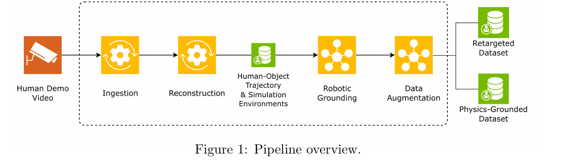

Robot learning needs more scalable ways to turn real-world experience into usable training data. Video offers an abundant record of human-object interaction, task structure, and physical context, but it is usually unstructured and difficult to connect to simulation or policy learning.
From Human Videos to Dexterous Robot Capability is a half-day, hands-on CoRL 2026 tutorial on converting unconstrained human-object videos into validated robot-training data. The tutorial motivates Video to Data as a practical bridge from raw demonstrations to actionable robot learning assets, showing how modern vision-language models, reconstruction tools, and robotic grounding can help convert everyday video into structured data for learning generalizable robot skills.
We are hosting the Video to Data Challenge! Registrations are now open. Find out more at this link.
How can raw human video become robot-usable data?
We teach the pipeline as a sequence of validation gates: queryable video segments, plausible reconstructions, simulation-ready task assets, retargeted motions, and policy-training artifacts. Participants will leave with runnable scripts or notebooks, precomputed artifacts, and an adaptation checklist for deciding whether their own video data is ready for robot learning.

Tutorial repository: github.com/nvidia-isaac/video_to_data
By the end of the tutorial, participants will be able to:
The tutorial is a guided coding session: short conceptual introductions followed by runnable exercises. Because full reconstruction and policy training can require GPUs, every exercise has three paths: laptop-only inspection, optional live GPU execution, and precomputed artifacts so every attendee can complete the objectives.
Each instructor owns a distinct pipeline stage and will support the hands-on exercises, artifact clinics, and debugging sessions.
Materials will be public and designed to be useful even for participants who do not use NVIDIA infrastructure after the event. The post-tutorial artifact will include:
We will encourage participants to bring their own data questions and use the final guided extension to decide whether their videos are ready, need preprocessing, or need additional sensing or annotation.